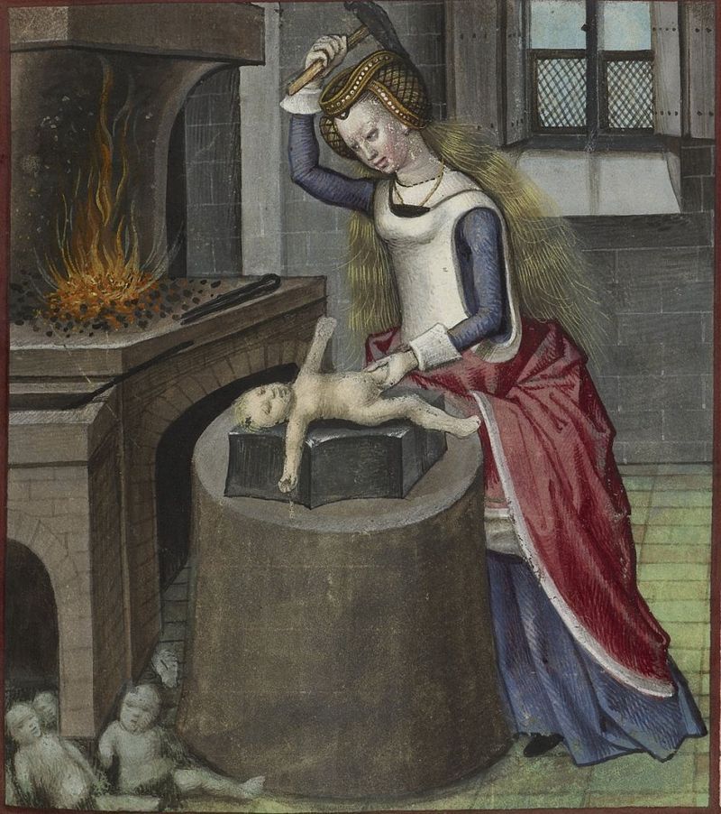

Nature Forging a Baby

(1490-1500, unknown artist)
She wore a weird hat and called herself “Nature”
Probably some New-Agey Middle Ages shit
She had hair as wispy as fire, and a face that said nothing
I mean it literally said nothing, she didn’t really talk
She only came out to occasionally shake a tree or flick water at people
We didn’t know what her deal was
But ever since she came to town, things haven’t been the same
We’ve heard things coming from her house
Sizzles on steel
And we’ve smelled things burning
And ever since she came to town, many children have been born troubled
Without limbs, for instance
Or eyes
Some have to be buried.
Her name was nature, but she could be a real fuck-up
We don’t know what she was thinking behind her dead little eyes
But she was cruel
So we burned her at the stake